How-To Geek
How to Create a Guest Account in Windows 10
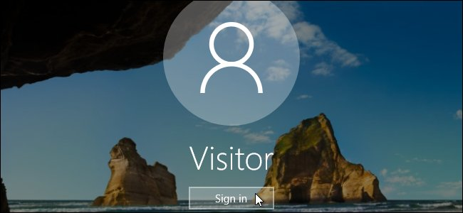
If you find that your guests are asking fairly often to use your computer temporarily to check their email or look something up on the web, you don’t have to let them use your personal account or create a special account for each guest.
Windows used to have a dedicated Guest account you could enable that would allow someone to temporarily use your computer, while ensuring they wouldn’t see your private data. Guest accounts also had limited access, so anyone logged in as a guest couldn’t install software or change system settings.
This option is no longer easily accessible in Windows 10—but you can still create a guest account using the Command Prompt.
To open a Command Prompt window, press the Windows key+X to access the Win+X menu and select “Command Prompt (Admin)”. You must select the administrator version of the Command Prompt to create a new user account.
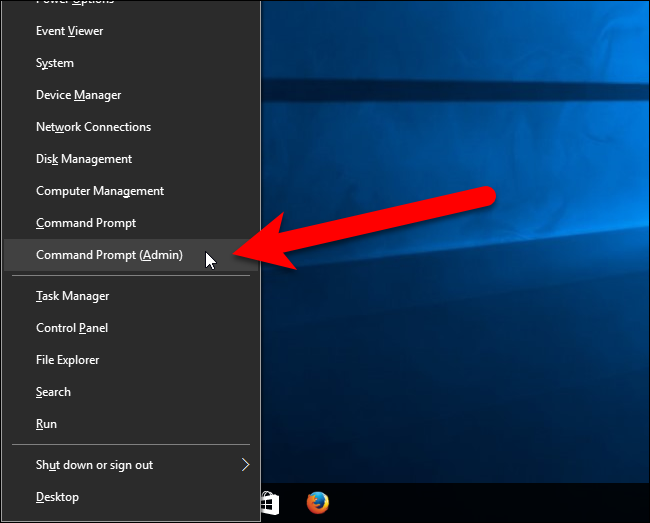
If the User Account Control dialog box displays, click “Yes” to continue.
NOTE: You may not see this dialog box, depending on your User Account Control settings. We don’t recommend disabling UAC entirely, however.
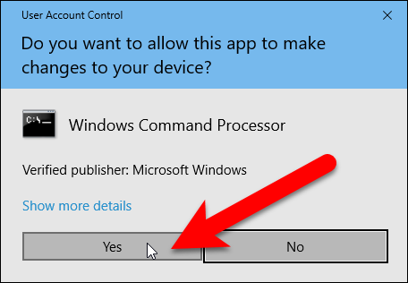
First, we’ll create a guest account called Visitor (you can call it whatever you want). The name “Guest” is a reserved account name in Windows, even though you can’t access the built-in guest account anymore, so you’ll need to choose a name other than “Guest”. To create the account, type the following command at the prompt and press Enter.
net user Visitor /add /active:yes
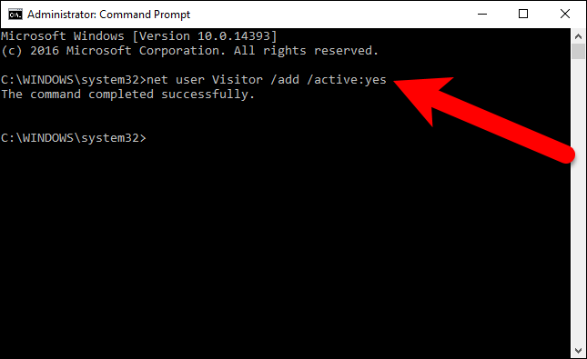
Because the Visitor account is so limited, it doesn’t really need to be protected. So, we’re going to apply a blank password to it, or no password at all. To do this, type the following command at the prompt. The last character is an asterisk.
net user Visitor *
When asked for the password, press Enter without typing one. Then, just press Enter again when asked to retype the password.
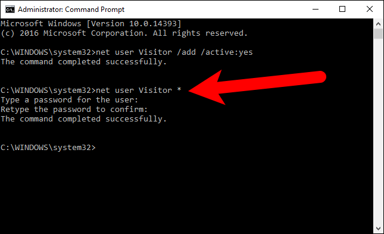
By default, new users are placed in the users group so they have the permissions for standard users. However, we want the account to more limited than that. So, we’re going to put the Visitor user in the guests group. To do this, we must first delete the Visitor user from the users group. To do this, enter the following command at the prompt.
net localgroup users Visitor /delete
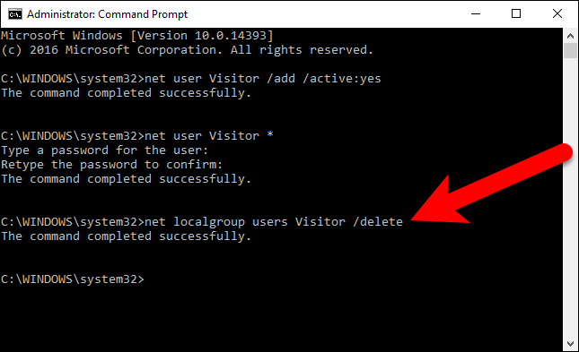
Then, type the following command at the prompt to add the Visitor user to the guests group.
net localgroup guests Visitor /add
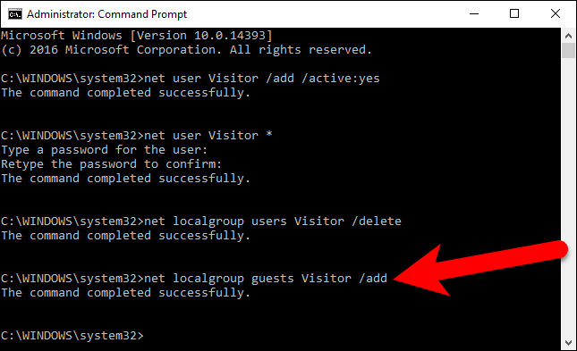
Close the Command Prompt window either by typing exit at the prompt or by click the “X” button in the upper-right corner of the window.
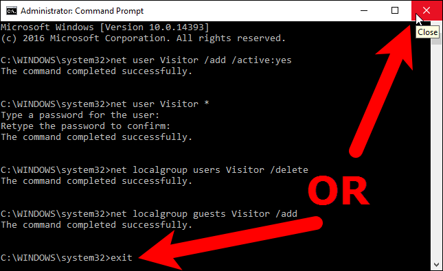
Now, the Visitor user displays in the list of users in the lower-left corner of the logon screen. Guests can simply select the Visitor user and click “Sign in” to log in to the Visitor account and have the use of basic functions like running a browser to surf the web.
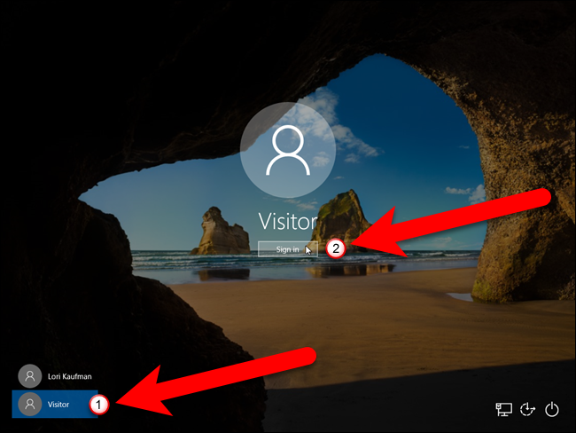
![]()
Multiple users can be logged in at once in Windows, so you don’t even have to sign out of your account to let a guest log in to the Visitor account. There are two ways you can access the Visitor account. If you’re currently using your account on the computer, you can select the Visitor account on the Start menu to log into that account for your guest.
If the screen is locked, the guest can click on the Visitor account on the logon screen, as shown above.
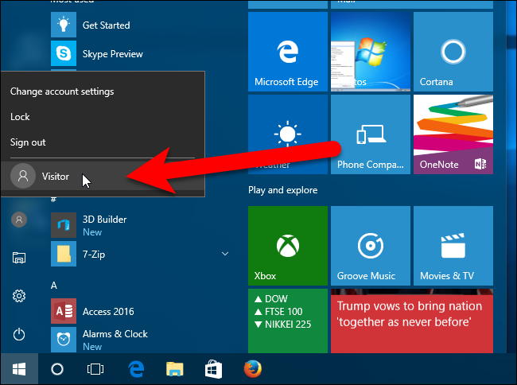
While the guest is logged into the Visitor account, they can see that you’re logged in, but if they try to get to your account, they will be asked for your password on the login screen.
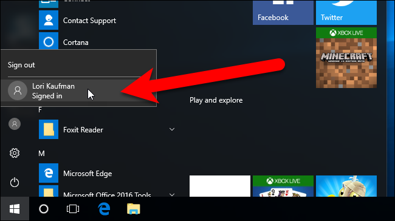
If you find you don’t need it anymore, you can delete the Visitor account just like you can any other user account.
- Published 11/15/16
![]()
![]()
![]()
![]()
![]()
![]()
![]()
![]()
![]()

I followed every step as is mentioned but when I click Sign-in it shows a message "The user Profile Service failed the sign-in. User profile cannot be loaded." What is the problem and how to fix it ?